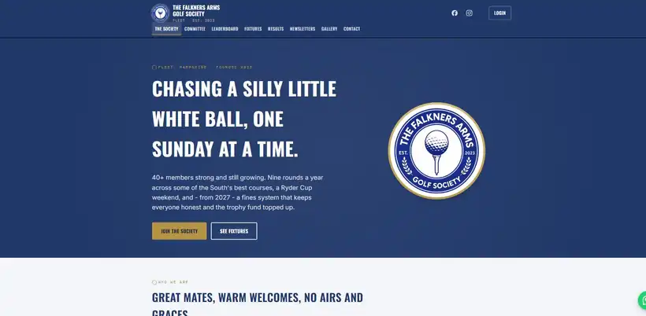

The brief
Take the committee off paper
Fixtures, who is playing, the tee draw, a separate pairs draw, results, prizes, the hole-in-one pot and who has paid. All of it managed by volunteers between rounds.
Case study · Members and admin
A society running fixtures, draws, results and prize money by hand, with a turnout that is often an odd number and never the same twice.

Take the committee off paper
Fixtures, who is playing, the tee draw, a separate pairs draw, results, prizes, the hole-in-one pot and who has paid. All of it managed by volunteers between rounds.
A public site with a committee screen behind it
Members see fixtures and results. The committee logs in to run the draws, record scores and mark payments, with the awkward rules handled properly.
21 players and 6 side competitions
An odd turnout means one player is paired twice and gets two chances at the prize. Each round runs only the side competitions the committee chooses, on holes that change with the course.
Next step
Send the address of your current site and get a straight answer on what it needs and what it would cost.